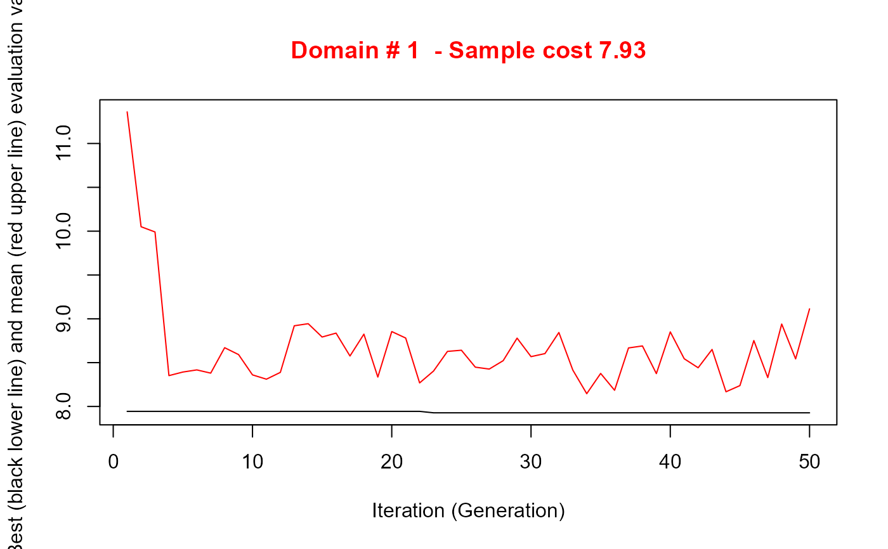
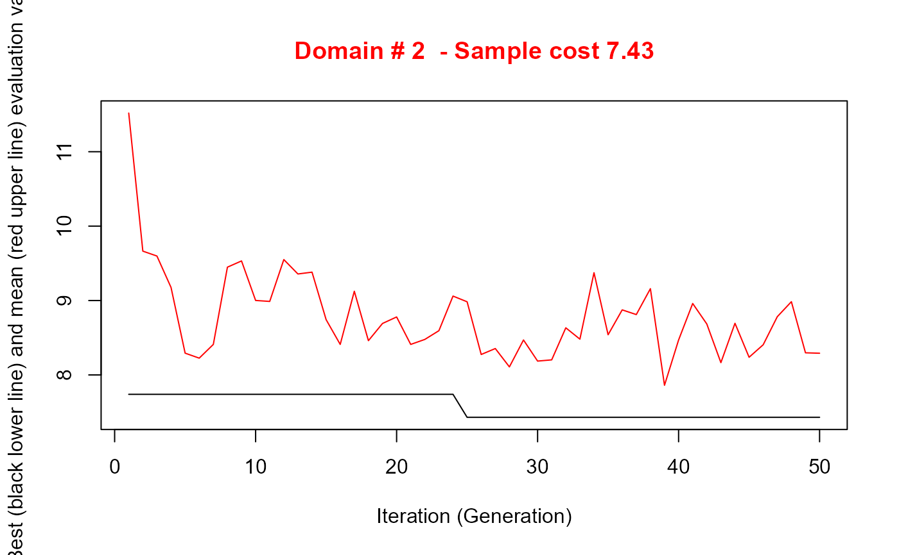
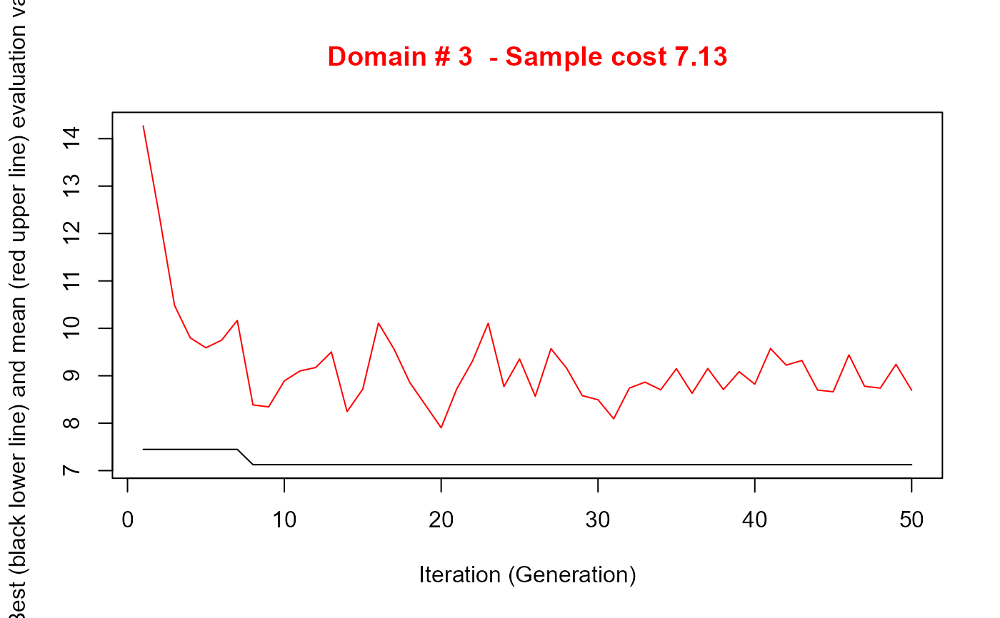

R/prepareSuggestion.R
prepareSuggestion.RdBuilds two initial solutions (chromosomes) to be passed, through the
argument suggestions, to optimStrata with
method = "continuous" (i.e. to optimizeStrata2).
Each chromosome contains, for every domain, the cut points of the
stratification variables X1, X2, ..., expressed as fractions of the maximum
of each variable within the domain. This function replaces the previous
version of prepareSuggestion.
The sampling frame, as produced by buildFrameDF:
a data frame with the stratification variables X1, X2, ... (numeric,
non-negative, no missing values), the target variables Y1, Y2, ... and
the column domainvalue (consecutive integers 1, ..., D). The
column id is required only by the seed "kmean". Column
names are not case sensitive.
Number of strata H: either a single integer, used for all domains, or a vector with one value (at least 2) per domain.
Rules used to build the two chromosomes: one or two of
"kmeans1d", "cumrootf", "quantile", "kmean",
"univariate". If only one rule is given, it is used for both
chromosomes. Default c("kmeans1d", "univariate").
Character vector with the names of the X variables that
receive cut points (e.g. c("X1", "X4")). Default NULL: all
the X variables are active.
Name of the X variable used by the seed
"univariate"; it must be one of the active variables. Default
NULL: the active X with the highest mean absolute correlation with
the Y variables (the first active X if there are no Y variables).
Rule used by the seed "univariate": one of
"cumrootf" (default), "kmeans1d", "quantile".
Data frame with columns id and suggestions, as
returned by KmeansSolution2; required only by the seed
"kmean".
Number of equal-width classes used to compute the cumulative
root frequencies in the rule "cumrootf" (default 1000; reduced to
the number of distinct values when this is smaller).
A data frame with one row per cut point (H - 1 for each X
variable, in the order X1, X2, ..., within each domain) and columns
domainvalue, suggestions1 (first chromosome) and
suggestions2 (second chromosome), with values in [0, 1]. The
attribute "seeds" contains a short description of the rule that
generated each chromosome.
How the "continuous" method forms the strata.
In strataGenalg2() (function evaluate()) the cut points of each
variable X_j split its range into H closed intervals; a unit equal to a cut
point falls in the upper interval. The stratum of a unit is the
maximum, over the variables, of the index of the interval in which it
falls. With several X variables the strata are therefore nested
"staircase" regions, not the cross-classification of the intervals.
What this function does.
the seeds are built directly in the space of the X variables, so that each chromosome is an exact, valid partition under the rule above;
cut points are normalised by the maximum of X_j within each
domain, as evaluate() does (the previous version used the
overall maximum);
cut points are placed half-way between the last value of a stratum and the next observed value, so that units on a boundary are not shifted to the upper stratum;
the two chromosomes can come from different rules (default: 1-D k-means on each X, and the cumulative root frequency rule of Dalenius and Hodges on a single X).
Active and inactive variables.
Cutting a variable that is irrelevant for the targets is harmful under the
"maximum index" rule: its cuts push units into high strata almost at
random. Only the variables listed in active (default: all) receive
cut points; the cuts of the other variables are set to 1 (i.e. at their
maximum), which makes them practically inactive (only the unit(s) equal to
the maximum of an inactive variable are moved to the top stratum). The
genetic algorithm remains free to activate them during the search.
Available seeds (argument seeds):
"univariate"cut points on one active variable only
(univariate_var, by default the active X with the highest mean
absolute correlation with the target variables Y* in frame),
computed with the rule univariate_rule; all the other variables
are inactive. Since the genetic algorithm keeps its best solution
(elitism), it cannot end worse than this univariate stratification.
"kmeans1d"1-D k-means with H clusters on each X_j (the clusters of a single variable are intervals, so the translation into cut points is exact).
"cumrootf"cumulative root frequency rule (Dalenius and Hodges, 1959) on each X_j.
"quantile"equal-frequency intervals on each X_j.
"kmean"approximate translation of a
KmeansSolution2 solution (argument kmean), close to
the previous prepareSuggestion: for each X_j the clusters are
ordered by the median of X_j and their maxima are used as upper
bounds.
Limitations.
the X variables must be non-negative (the genetic algorithm encodes the cut points in [0, 1] times the maximum of X_j);
optimizeStrata2() counts as X variables all the
columns whose (upper case) name contains the letter "X": the frame
should not contain other such columns (a warning is issued).
Dalenius, T. and Hodges, J. L. (1959). Minimum variance stratification. Journal of the American Statistical Association, 54(285), 88-101.
# ---------------------------------------------------------------------
# Preparation of the frame from the "iris" dataset
# ---------------------------------------------------------------------
# Domains: the three species (50 units each)
# Stratification variables (X): Petal.Length, Petal.Width, Sepal.Width
# Target variables (Y): Sepal.Length, Petal.Length
data(iris)
iris$id <- seq_len(nrow(iris))
frame <- buildFrameDF(df = iris,
id = "id",
X = c("Petal.Length", "Petal.Width", "Sepal.Width"),
Y = c("Sepal.Length", "Petal.Length"),
domainvalue = "Species")
head(frame)
#> id X1 X2 X3 Y1 Y2 domainvalue
#> 1 1 1.4 0.2 3.5 5.1 1.4 1
#> 2 2 1.4 0.2 3.0 4.9 1.4 1
#> 3 3 1.3 0.2 3.2 4.7 1.3 1
#> 4 4 1.5 0.2 3.1 4.6 1.5 1
#> 5 5 1.4 0.2 3.6 5.0 1.4 1
#> 6 6 1.7 0.4 3.9 5.4 1.7 1
# Precision constraints: CV of 2% on Y1 and 3% on Y2 in each species
errors <- data.frame(DOM = "DOM1",
CV1 = 0.02,
CV2 = 0.03,
domainvalue = 1:3)
errors
#> DOM CV1 CV2 domainvalue
#> 1 DOM1 0.02 0.03 1
#> 2 DOM1 0.02 0.03 2
#> 3 DOM1 0.02 0.03 3
# ---------------------------------------------------------------------
# Suggestions: only X1 (Petal.Length) and X2 (Petal.Width) are active
# ---------------------------------------------------------------------
set.seed(1234) # the seed "kmeans1d" uses stats::kmeans()
sugg <- prepareSuggestion(frame, nStrata = 3, active = c("X1", "X2"))
attr(sugg, "seeds") # description of the seeds
#> [1] "kmeans1d on X1+X2" "univariate cumrootf on X1"
evalSuggestion(frame, errors, sugg, which = 1) # 1-D k-means seed
#> domainvalue strata_requested strata_nonempty n
#> 1 1 3 3 7.9
#> 2 2 3 3 8.9
#> 3 3 3 3 12.5
evalSuggestion(frame, errors, sugg, which = 2) # univariate seed
#> domainvalue strata_requested strata_nonempty n
#> 1 1 3 3 10.7
#> 2 2 3 3 7.7
#> 3 3 3 3 7.4
# \donttest{
# ---------------------------------------------------------------------
# Optimisation with the "continuous" method starting from the seeds
# ---------------------------------------------------------------------
set.seed(1234)
solution <- optimStrata(method = "continuous",
framesamp = frame,
errors = errors,
nStrata = c(3, 3, 3),
suggestions = sugg,
iter = 50,
pops = 10,
writeFiles = FALSE,
showPlot = FALSE,
parallel = FALSE)
#>
#> Input data have been checked and are compliant with requirements
#>
#> -------------------------------------------------------
#> *** Domain : 1
#> Number of strata : 50
#> *** Sample cost: 7.927567
#> *** Number of strata: 3

#>
#> -------------------------------------------------------
#> *** Domain : 2
#> Number of strata : 50
#> *** Sample cost: 7.430355
#> *** Number of strata: 3

#>
#> -------------------------------------------------------
#> *** Domain : 3
#> Number of strata : 50
#> *** Sample cost: 7.125014
#> *** Number of strata: 3

#>
#> *** Sample size : 22
#> *** Number of strata : 9
#> ---------------------------
sum(solution$aggr_strata$SOLUZ) # total sample size
#> [1] 22.48294
# }